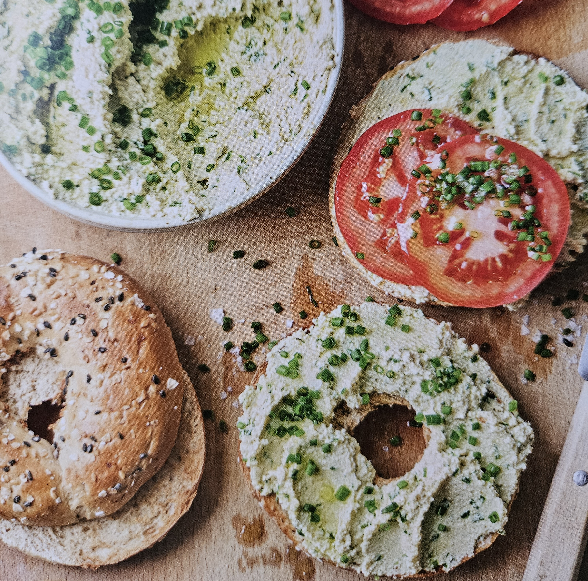

приготовление:
-
Хорошо отжать 300 г твёрдого тофу.
-
Переложить тофу в мощный блендер или кухонный комбайн. Добавить 20 г шнитт-лука, 4 ст. л. оливкового масла extra virgin, 2 ст. л. яблочного уксуса, 1 ч. л. светлой мисо-пасты, 1 небольшой зубчик чеснока и морскую соль.
-
Измельчить до полностью однородной массы, при необходимости снимая смесь со стенок чаши. Намазка должна получиться густой, кремовой и легко распределяться по хлебу.
-
Подавать на поджаренном хлебе или бейгле с ломтиками томатов. Хранить намазку в холодильнике и использовать в течение 4–5 дней.